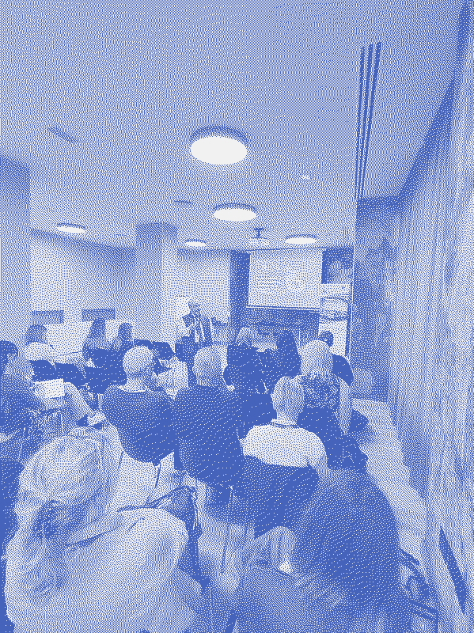
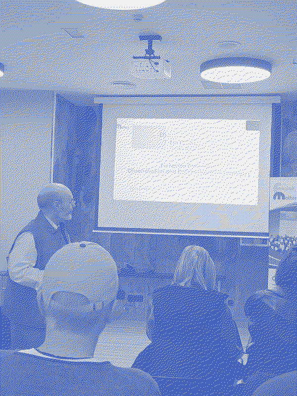

European Dimension, Presentation and Dissemination
Day note synthesis
The room was the same. The educators in it were not.
The session returned to the week’s opening question — what is the European Dimension, what does it ask of educators, what are we responsible for doing with what we have learned — but arrived at it now with the weight of what had come between. The Prado. Toledo. The IES. The presentations. The conversations over dinner, over cañas, over the course of a week in a city that had been making arguments all along.
The session opened on a quotation from John F. Kennedy: “The goal of education is the advancement of knowledge and the dissemination of truth.” Then the question that followed: “What is the truth in 2026? As teachers? As educators? As citizens?”
The week had been building toward exactly the conditions under which that question has urgency: generative AI, disinformation, algorithmic saturation, the collapse of shared evidential ground. The answer the session offered was not technical. It was vocational. The educator who teaches critical reading, who models the refusal of the convenient version, who plants the capacity for healthy scepticism in a student — that educator is doing something structurally necessary, not supplementary.
Three figures arrived at the end, each carrying a dimension of the week’s argument:
Cervantes: “La pluma es la lengua del alma.” Writing as the externalisation of interior life. The teacher who writes makes their practice visible. The student who writes makes their thinking visible.
Picasso: “Every child is born an artist. The problem is how to remain an artist once we grow up.” The same claim the week had been practising: unlearning the rigidity that formal education installs, recovering the openness that learning requires.
Salvador de Madariaga: “This Europe must be born. And it will be born when the Spaniards say ‘our Chartres’, when the English say ‘our Krakow’, when Italians say ‘our Copenhagen’.” The Europe that the course argued for is cultural, not administrative. It exists when patrimony stops being national and becomes shared. When a Portuguese educator looks at Las Meninas and carries it home.
“Fiat Europa.” Let there be Europe. Not given. Made. By educators willing to say “ours” about things built elsewhere.
See European Dimension and Dissemination for the full session notes.
European Dimension and Dissemination
Notes on the Closing Session — Saturday, 9 May 2026
The last session returned to the themes that opened the week.
European Dimension and Dissemination had been announced as the programme’s closing arc. Arriving there after six days was different from arriving cold on Sunday: the frameworks were familiar now, tested against a real school, a real city, real artworks. The question the session asked — “what is truth in 2026?” — was not abstract. It was the week’s final exam, returned to the room as a question rather than an answer.
The Central Question
The session opened on a slide carrying a quotation:
“The goal of education is the advancement of knowledge and the dissemination of truth.” — John F. Kennedy
Then the question that turned the whole room:
“What is the truth in 2026? As teachers? As educators? As citizens?”

Eduardo (ES), the English Matters’ coordinator, during the final European Dimension session | Day 7 © André AlmeidaThe question was not rhetorical. The session had spent the week building toward exactly the conditions under which that question becomes urgent: generative AI, disinformation, algorithmic bubbles, post-truth, media saturation, the collapse of shared evidential ground. Media literacy, AI literacy, critical thinking, healthy scepticism — all of it had been building toward this. The dissemination of truth is not a bureaucratic task. It is a responsibility that grows harder precisely as the tools for its corruption multiply.
Dissemination — The Distinction That Matters
The session drew a clear line between two things that are often conflated:
Dissemination — making work available to the professional and scientific community. The circulation of practice, evidence, methodology.
Communication — making work visible to society. Public engagement, media, the broader democratic conversation about education.
Most teachers, the coordinator suggested, do neither. They work inside closed classrooms, produce extraordinary things, and allow that work to remain invisible. The institutional logics of education — timetables, assessment pressures, bureaucratic cultures — conspire to keep teaching private.
The session pushed against this directly. “Teachers make grandiose things but we’re not aware.” The sentence was noted in the room. It could be read as observation or as diagnosis.
Disseminare — Scattering Seeds
The Latin root of the word made an appearance: “disseminare” — to scatter seeds.
The image reframes what dissemination is. Not publication in the institutional sense, not the delivery of outputs to a funding body, not a checkbox in a project management system. Scattering seeds. The act does not control where they land, or whether they germinate, or what grows. It requires the willingness to release something into circulation without guarantee of return.
This connects to the course’s implicit model of how learning spreads. An educator in Portugal or Germany or Italy, returned from a week in Madrid, carrying a set of frameworks and experiences and artworks and conversations: seeds scattered into whatever contexts they inhabit. The rhizomatic metaphor was apt — Erasmus+ as a network of small practices connecting, mutating, surprising the people who carry them forward.

Eduardo (ES) during the Dissemination session | Day 7 © Team”Write! You are the Intellectual!”
One of the session’s strongest moments: the direct address to teachers as knowledge producers.
Many educators do not recognise themselves as intellectuals. The dominant self-image is executor: curriculum delivered, assessment administered, results logged. The session challenged this directly. A teacher who has developed a practice, tested it, reflected on it, adapted it — that teacher has produced knowledge. The question is whether they consider themselves authorised to make it public.
“Write! You are the intellectual!” is a claim about professional identity, not just about communication strategy. It says: what you know is worth saying. What you have built has value beyond your classroom. The professional isolation that characterises teaching in most European systems is not inevitable. It is a choice — and it can be made differently.
The adjacent observation: “Do you have five minutes? I have this idea.” Micro-dissemination. The corridor conversation. The staffroom suggestion. Change in educational culture does not require conferences and publications. It requires people willing to say, informally and persistently, what they have learned.
Truth, Scepticism, and the Teacher as Barrier
One of the session’s most serious claims came from Gordon Pope:
“One of the most useful attributes we can develop in young people is the ability to think critically and maintain a healthy scepticism.”
The session connected this to the full arc of the week: every session had been practising interpretation, inference, and the refusal of easy reading. The Goya puzzle before the Prado. Las Meninas and the question of who is watching. The AI literacy session’s central challenge — “should we adapt to technology or shape it?” Every one of these was an exercise in healthy scepticism: attending carefully, deferring judgement, refusing the first available interpretation.
And then the note that stayed:
“Sometimes teachers are the only barrier between students and disaster.”
In 2026, with AI-generated content indistinguishable from documentary evidence, with algorithmic systems designed to capture and hold attention regardless of informational quality, with political systems under pressure from narratives that exploit the absence of shared factual ground — the educator who teaches critical reading, who insists on evidence, who models the refusal to accept the convenient version: that educator is not performing a supplementary role. They are doing something structurally necessary.
The Quotes That Framed the Closing
Three figures arrived at the end of the week, each adding a dimension:
Cervantes — “La pluma es la lengua del alma.” The quill is the tongue of the soul. Writing not as output but as the externalisation of interior life. The teacher who writes makes their practice visible; the student who writes makes their thinking visible. Cervantes appears in this context not as literary heritage but as argument: expression matters, and the forms it takes carry the soul of the person making it.
The session connected Cervantes to Don Quixote’s modernity: characters that evolve, that are not flat. True learning implies transformation, ambiguity, interior complexity. Not the delivery of information to a static receiver.
Picasso — “Every child is born an artist. The problem is how to remain an artist once we grow up.” The connection to unlearning is direct. The week had argued, in different registers across seven days, that what stands between learners and genuine learning is often what they have already been taught: about what counts as a right answer, about what the classroom is for, about who holds knowledge and who receives it. To remain an artist is to hold onto the openness that formal education systematically compresses.
Salvador de Madariaga — “This Europe must be born. And it will be born when the Spaniards say ‘our Chartres’, when the English say ‘our Krakow’, when Italians say ‘our Copenhagen’.”
This was the philosophical key to the entire week. The Europe that the course argued for — through the Erasmus Spirit on Sunday, through the Walking Tour on Monday, through Toledo on Friday — is not an administrative entity. It is a cultural one. It exists when patrimony stops being national and becomes shared. When a Portuguese educator looks at Las Meninas and says “our painting.” When a German participant stands in front of Goya’s Third of May and carries it home.
“Fiat Europa.” The formulation was almost liturgical. Let there be Europe. Not given. Willed. Made by educators who teach students to say “ours” about things that were made elsewhere.
”From Teachers to Teachers”
From teachers to teachers, the session’s summary of the course’s philosophy: peer learning, horizontal exchange, the refusal of the expert-to-novice transmission model. The course was not a training event delivering competences to passive recipients. It was a community of practice, temporary and European, that treated every participant as both teacher and learner.
The closing observation: what the week had been was not primarily methodological. It was cultural, ethical, civic, epistemological, and European. The frameworks — UDL, CLIL, cooperative learning, SAMR, AI literacy, place-based learning — were tools. The project was larger: educators who interpret the world carefully, disseminate what they find, and build with their students the capacity to do the same.
What to Disseminate
The session offered a practical grid:
What: “Our experience of Europe and Europeans… and the world.” Not an activity report. A lived experience of difference and connection.
To whom: Students, staff, school leadership, parents’ associations, educational authorities, professional journals, social media, local radio. The list was deliberately wide: the argument for visibility does not stop at the school gate.
How: Lessons, eTwinning, online communities, conferences, seminars, e-newsletters, reports, articles, handbooks. And the aspiration: “Making a handbook of good education in Europe.” One page describing how you teach in Europe. Documenting practice as the production of professional culture.
The nine plus one countries represented in the week: Bulgaria, Croatia, Portugal, France, Czech Republic, Germany, Italy, Slovakia, Greece. The seeds, already scattered.
References
-
Erasmus+ Spirit
-
Critical Thinking
Part of Dissemination & Reflection, under Active Methodologies for Teaching and Learning. LearningLandscapes